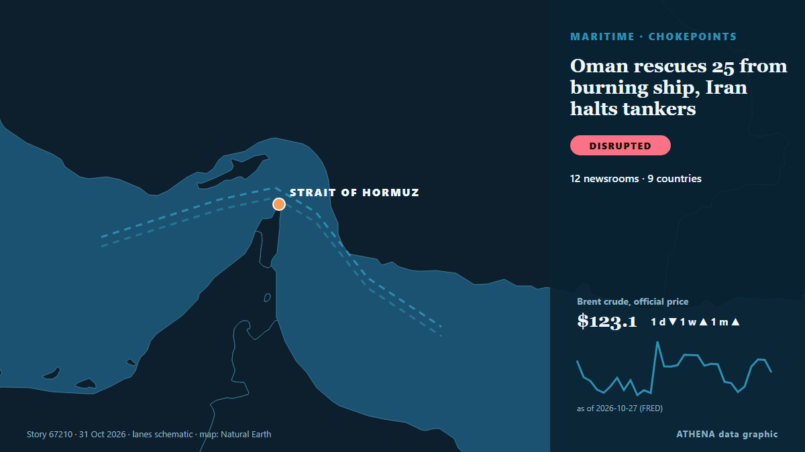

Transport maritime et ports
| 18 oct. | 0 |
|---|---|
| 19 oct. | 0 |
| 20 oct. | 1 |
| 21 oct. | 0 |
| 22 oct. | 2 |
| 23 oct. | 2 |
| 24 oct. | 1 |
| 25 oct. | 2 |
| 26 oct. | 2 |
| 27 oct. | 3 |
| 28 oct. | 3 |
| 29 oct. | 4 |
| 30 oct. | 3 |
| 31 oct. | 0 |
Les titres sont affichés en anglais, tels que publiés.

Oman rescues 25 from burning ship, Iran halts tankers
Oman’s navy evacuated the crew members from the Panamanian-flagged merchant ship RITI after it was attacked and caught fire. de Free Malaysia Today
Greece and Turkey Clash at UN Over Libya Maritime Agreement
Greece and Turkey engaged in a sharp diplomatic confrontation at the United Nations Security Council on Thursday, over the controversial 2019 Turkey-Libya maritime agreement, exchanging accusations… de Greek Reporter
Turkey-Libya maritime delimitation MoU ‘null and void’ says Cyprus
The Republic of Cyprus has reiterated its position that the 2019 Turkey-Libya MoU on maritime delimitation is “null and void”. de Cyprus Mail
US Centcom rejects Iranian reports of vessels hitting Hormuz sea mines
The US Central Command (CentCom) has rejected Iranian media claims that commercial ships are striking sea mines in the Strait of Hormuz, saying American forces have cleared the waterway’s… de Gulf News
PM Mitsotakis at UN: Turkish-Libyan memorandum illegal and arbitrary, geography cannot be rewritten
International law could not be applied selectively and rules governing the seas could not be rewritten to serve the ambitions of individual states, Prime Minister Kyriakos Mitsotakis stressed… de Keep Talking Greece
Japan a real threat to regional security: Chinese spokesperson
Closing his remarks, Koizumi reaffirmed Japan's support for ASEAN-led decision-making. de Daily Tribune
Vessel reported on fire in Strait of Hormuz: UK maritime agency
Fire on vessel reported 25 nautical miles northeast of Khasab, Oman. de Anadolu Agency (English)
Zelenskyy: Tankers carrying Russian diesel to US will not be targeted
Deputy Prime Minister Novak reveals vessel carries 40,000 metric tons of fuel, paperwork on supply nearing completion. de Express Tribune
Ferry Strike Ties Up Ships at Greece’s Biggest Ports
A 24-hour ferry strike keeps ships tied up at Piraeus, Rafina, Lavrio, Patras and three more ports on Friday 30 October as seafarers demand war zone safety. de Greek City Times
Amid Legal Uncertainty, US Lawmakers Warn Banks, Ports Over Russian Diesel Imports
A bipartisan group of US lawmakers have warned American banks, port authorities and fuel-industry groups against facilitating imports of Russian diesel, raising the prospect of congressional… de RFE/RL (English)
Air Force to assist Navy in search for missing fishermen
Search and rescue operations have been intensified to locate three fishermen who went missing at sea off Pudumathalan, Mullaitivu, after adverse weather conditions hampered maritime search efforts. de Daily Mirror
Russia-Ukraine conflict puts Black Sea shipping at growing risk
The intensification of military hostilities between Russia and Ukraine in the Black Sea has posed serious threats to international shipping. de AzerNews
Government to cut public EV charging costs to save drivers £150 a year
The news was announced in the Budget 2026 yesterday [October 29] in a bid to give drivers that rely on electric vehicles some 'breathing space' in the current cost of living. de WalesOnline
Houthis say Saudi-led airstrikes killed 14 at a market in northern Yemen, and other Mideast news
Iran-backed Houthi rebels say Saudi-led airstrikes have killed 14 people in a busy market in northern Yemen. de ABC News (International)
South Korea says considering deployment options to Strait of Hormuz, including aircraft
SEOUL: South Korea’s National Security Adviser Wi Sung-lac said on Thursday that Seoul was still considering various options regarding a possible deployment to the Strait of Hormuz, including… de Business Recorder
Egypt, Bahrain and UAE Back Greece Over Turkey-Libya Maritime Deal
Greece gains the backing of Egypt, Bahrain and the UAE in opposing the Turkey-Libya maritime accord, as tensions over maritime boundaries and energy exploration intensify. de Greek City Times
Turkey Offers Egypt Maritime Deal, Claims Better Terms Than Greece
Turkey is ready to sign a maritime deal with Egypt, its Defence Ministry said, claiming Cairo would gain 15,000 sq km more sea than with Greece. de Greek City Times
Sri Lanka rescues 40 Iranian sailors from stranded ships
Sri Lanka rescued 40 Iranian sailors from commercial ships in international waters off its coast following medical emergencies and helped arrange their return to Iran, foreign ministry spokesman… de Iran International (English)
Greece and Turkey Trade NAVTEX Over Cable Survey Off Crete
Greece and Turkey have traded rival NAVTEX southeast of Crete over a ship surveying the route of a fibre-optic cable linking Asia and Europe. de Greek City Times